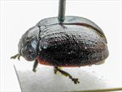
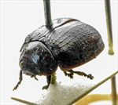
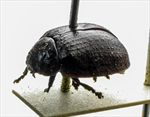
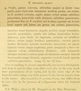

Click on images to enlarge
{kind=link}

Paropsis invalida type specimen, lateral view
{kind=link}

Paropsis invalida type specimen, oblique view
{kind=link}

Paropsis invalida type specimen
{kind=link}

Paropsis invalida, description
Name
Trachymela invalida (Blackburn, 1896)
Type specimen
Location: BMNH
Label data: “Type” (red-bordered circle), “6159 Bl. Mts. T”, “Blackburn coll. 1910-236.”, “Paropsis invalida Blackb.”
Female; Size: 7.95 x 5.9 x 3.0 mm; A-A: 1.27 mm, HCE/BL = 19.5% (approx, obtained from measurement of lateral view of specimen photo).
Reddish-brown species, rather smooth-looking with black verrucae and humeral callus. The verrucae are small and not very elevated, contributing to the smooth appearance of the specimen. Punctures very fine and the humeral callus is only slightly elevated, merging smoothly with surrounding area. Uniformly brown ventrally, maximum height clearly behind middle of elytra.
Original description
[Original description shown in figure, translated from Latin using ChatGPT, 03/2026]
♀. Oval, slightly convex; the greatest height (seen from the side) placed a little behind the middle of the elytra; rather shining; coloured as in P. sordida; head less densely and less finely punctulate, the interspaces very distinctly and finely punctulate; prothorax almost as in P. sordida, but on the disc more sparsely, rather lightly and not roughly (at the sides rather coarsely and rather densely) punctate; sides not flattened, posterior angles more rounded; scutellum punctulate.
Elytra slightly depressed below the humeral callus, scarcely impressed behind the base, punctate in rows rather finely (more strongly toward the sides), furnished with small verrucae, moderately distinct, arranged in rows; interstices rather flat (more rugulose toward the apex); the marginal portion scarcely distinct from the disc (toward the apex somewhat indistinct); humeral callus with its inner margin not much nearer to the suture than to the lateral margin of the elytra; basal ventral segment sparsely and finely punctulate.
Length 3⅗ lines (~7.6 mm); width 2⅗ lines (~5.5 mm).
Notes
Blackburn (1896) deals with T. invalida as part of his subgroup ii (i.e., those species without "strongly marked characters", whose greatest height is not or scarcely in front of the middle of the elytral margin and whose elytra are depressed under the humeral callus). Within that group, he characterises it as:
(1) inner edge of humeral callus distinctly nearer to lateral margin of elytra than to suture;
(2) sides of prothorax not at all explanate;
(3) elytra not having a well defined transverse wheal-like ridge;
(4) form not nearly circular, with elytra not wider than long;
(5) prothorax widening from apex to base; base much wider than front margin;
(6) puncturation of the elytra exceptionally fine.
This specimen somewhat resembles Ta03 or Ta29. Both of those have relatively fine puncturation on the elytra, and often have a punctured scutellum. Both the A-A values and HCE/BL values would be in the right range for a specimen of that size, which would be at the extreme upper range of length of either of these species. There is really not enough information to definitively associate the type of T. invalida with either of these or any other species.
References
Blackburn, T. 1896, "Revision of the genus Paropsis. Part I", Proceedings of the Linnean Society of New South Wales, vol. 21, no. 4, 637-693 (page 676).
Copyright © 2026. All rights reserved.